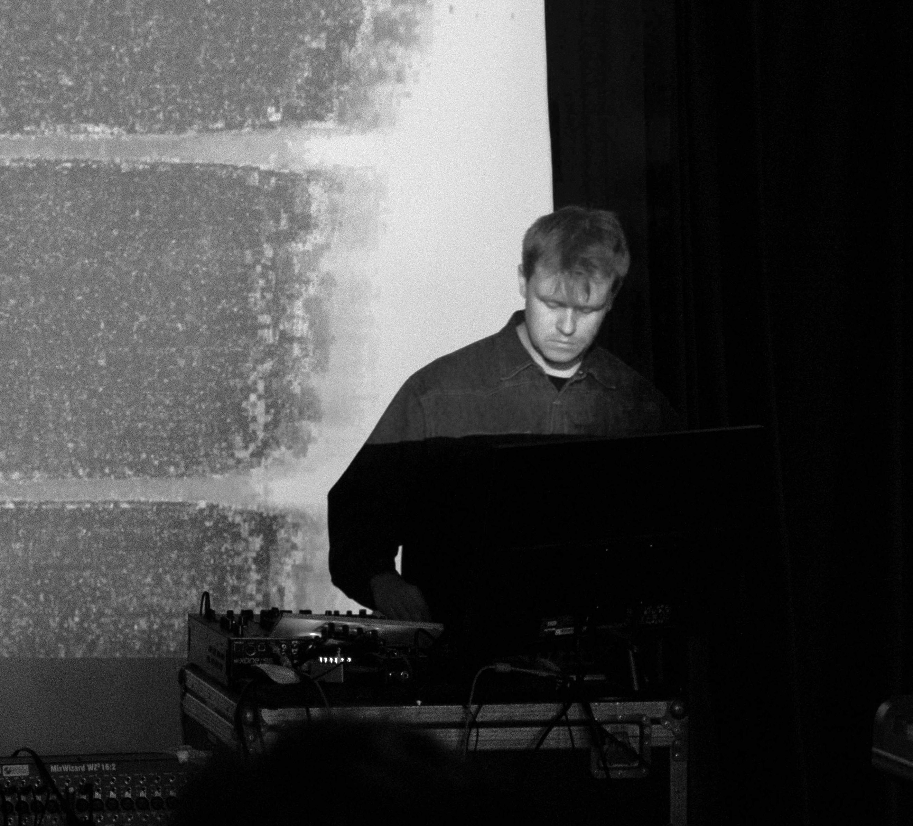

GUÐMUNDUR ARNALDS

Gummi Arnalds has been a prominent figure in the Icelandic music scene in recent years with his dizzying number of projects and collaborations across genres. His upcoming album under his own name, triple angle, is due out on Smekkleysa and new label Plata this fall. The music can be described as adventerous and forward thinking electronic music where intricate high energy beats meet delicate synthesis.